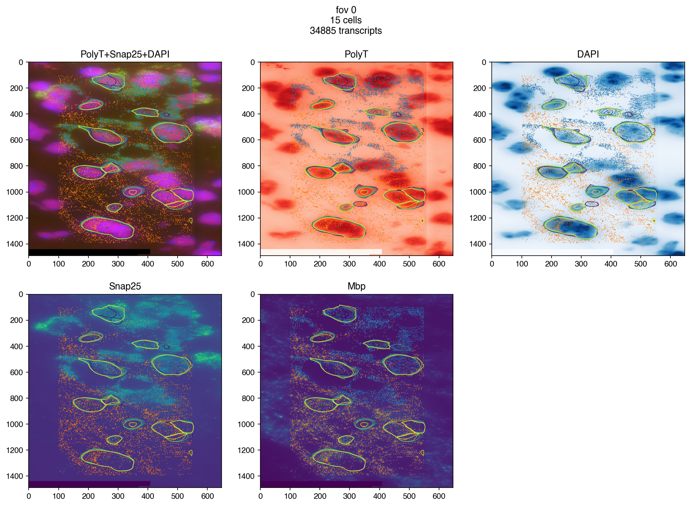
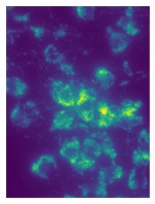
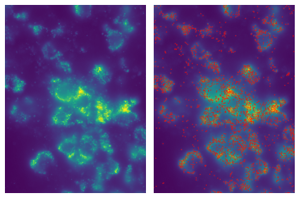

smFISH Spot Detection
Contents
4. smFISH Spot Detection#
from merfishing import Merfish
4.1. Entry Point#
merfish = Merfish('dummy_experiment/output/region_0/')
MERFISH Experiment Region
Region data located at /gale/netapp/cemba3c/merfish/example/dummy_experiment/output/region_0
Experiment dir located at /gale/netapp/cemba3c/merfish/example/dummy_experiment
/gale/netapp/cemba3c/merfish/example/dummy_experiment/output/region_0 does not contain cellpose results or the results are incomplete, using watershed results from vizgen pipeline instead.
4.2. Call Spots#
merfish.smfish_genes
['Snap25', 'Mbp']
merfish.call_spots(
image_names='all',
cpu=15,
padding=50,
detect_dense=True,
projection='max',
verbose=False,
redo=False,
)
4.3. Plot#
fig = merfish.plot_fov(
0,
n_cols=3,
image_names=['PolyT+Snap25+DAPI', 'PolyT', 'DAPI'] + merfish.smfish_genes,
genes=merfish.smfish_genes,
dpi=150
)

4.4. Transcripts#
transcripts = merfish.get_transcripts(fov=0)
transcripts[transcripts['gene'].isin(merfish.smfish_genes)]
| barcode_id | global_x | global_y | global_z | x | y | fov | gene | transcript_id | |
|---|---|---|---|---|---|---|---|---|---|
| 0 | 550 | 285.535095 | 2393.415283 | 0 | 117.057625 | -253.842117 | 0 | Snap25 | ENSMUST00000028727 |
| 1 | 550 | 286.183105 | 2393.415283 | 0 | 117.705612 | -253.842117 | 0 | Snap25 | ENSMUST00000028727 |
| 2 | 550 | 295.794952 | 2393.415283 | 0 | 127.317474 | -253.842117 | 0 | Snap25 | ENSMUST00000028727 |
| 3 | 550 | 303.894836 | 2393.415283 | 0 | 135.417358 | -253.842117 | 0 | Snap25 | ENSMUST00000028727 |
| 4 | 550 | 276.679230 | 2393.631348 | 0 | 108.201759 | -253.626114 | 0 | Snap25 | ENSMUST00000028727 |
| ... | ... | ... | ... | ... | ... | ... | ... | ... | ... |
| 1552 | 551 | 296.550934 | 2531.545166 | 5 | 128.073456 | -115.712135 | 0 | Mbp | ENSMUST00000133193 |
| 1553 | 551 | 288.775055 | 2531.977295 | 5 | 120.297577 | -115.280144 | 0 | Mbp | ENSMUST00000133193 |
| 1554 | 551 | 277.327240 | 2532.301270 | 5 | 108.849747 | -114.956146 | 0 | Mbp | ENSMUST00000133193 |
| 1555 | 551 | 273.547272 | 2532.409180 | 5 | 105.069801 | -114.848145 | 0 | Mbp | ENSMUST00000133193 |
| 1556 | 551 | 297.630920 | 2532.301270 | 5 | 129.153442 | -114.956146 | 0 | Mbp | ENSMUST00000133193 |
15264 rows × 9 columns
4.5. Details - BigFish Package#
Spot detection is done by the bigfish package with its automatic pipeline and default parameters. Each z-plane is run separately. Please read the bigfish package for more details and fine tune the parameter if needed. You can pass the key parameters to merfish.call_spots function.
Documentation: https://big-fish.readthedocs.io/en/stable/index.html
Jupyter Notebook Example: https://github.com/fish-quant/big-fish-examples/tree/master/notebooks
from bigfish.stack import maximum_projection
from bigfish.plot import plot_detection, plot_images
from bigfish.detection import detect_spots
image = merfish.get_image_fov('Snap25', 2)
plot_images(maximum_projection(image), contrast=True, framesize=(3, 3))

spots, threshold = detect_spots(
images=image[3],
return_threshold=True,
voxel_size=(103, 103), # in nanometer (one value per dimension zyx)
spot_radius=(150, 150)) # in nanometer (one value per dimension zyx)
print("detected spots")
print("\r shape: {0}".format(spots.shape))
print("\r dtype: {0}".format(spots.dtype))
print("\r threshold: {0}".format(threshold))
detected spots
shape: (3100, 2)
dtype: int64
threshold: 226.0
plot_detection(image[3], spots, contrast=True, framesize=(6, 6), radius=1)
